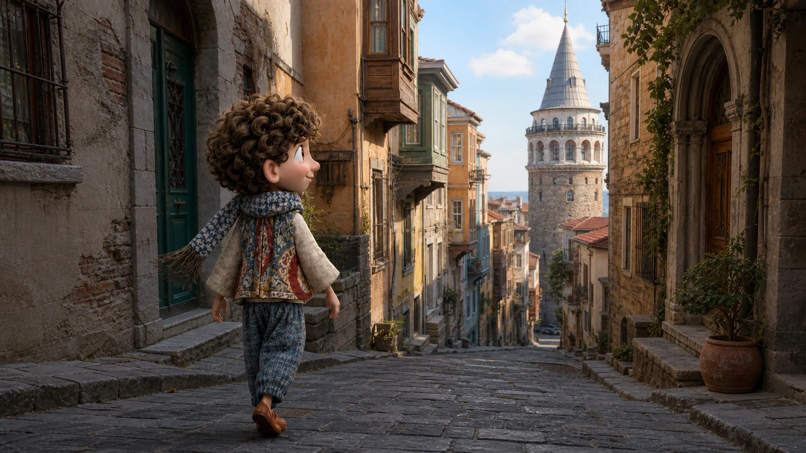
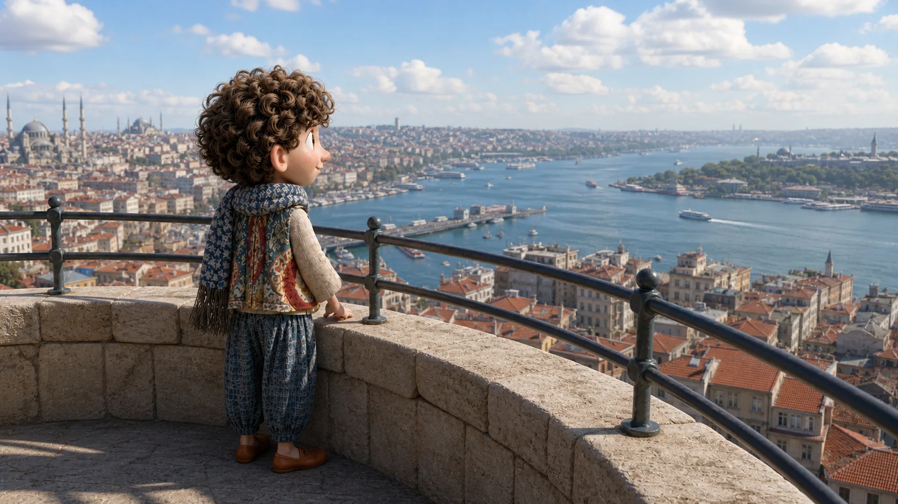
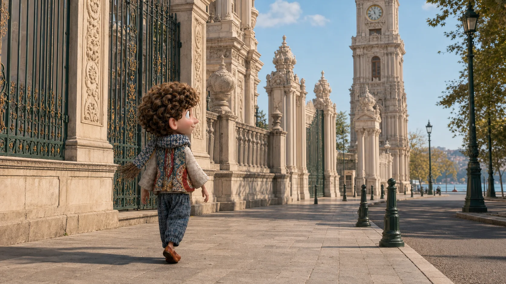
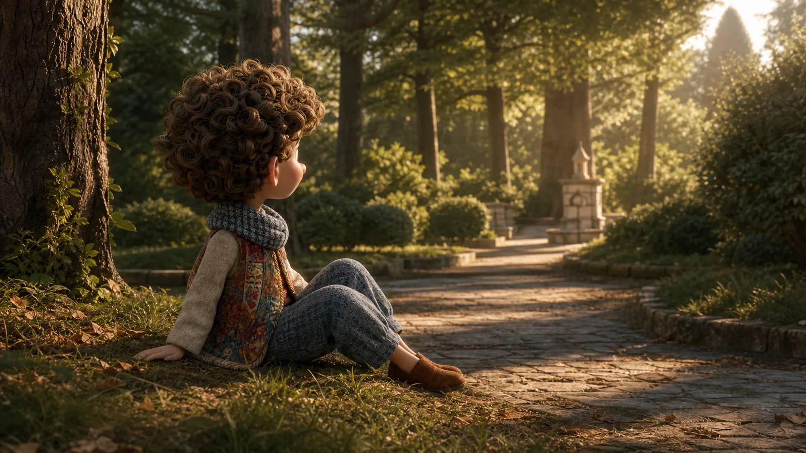

Hol van a bejárat?
Történet 06 · Galatától a Yıldız Parkig
Fentről megtalálod a vizet. Lent már nem kell sietned.
A Galata-toronyból előbb elhelyezzük a várost. Utána leérünk a saját tempónkhoz.
Gyere. Fentről könnyebb megérteni, mi merre van.

Előbb megtaláljuk a bejáratot
A várost nem mindig a kilátással kezded.
A torony körül könnyű csak fölfelé nézni. Nekünk előbb egy egyszerű kérdés kell, hogy jó helyen induljunk el.
Ezt kérdezheted
Giriş nerede?
Hol van a bejárat?
Nem baj, ha még nem tudod, merre lesz a víz. Azért megyünk fel.

Most te tájékozódsz
Találd meg azt a kék vonalat, amely összeköti a várost.
Az Aranyszarv belefut a Boszporuszba. Ha ezt egyszer meglátod fentről, lent sem csak utcaneveket követsz majd.
Ha megkérdeznéd
Boğaz hangi tarafta?
Merre van a Boszporusz?
Ali megvár
Megtaláltam a vizet. Menjünk le
Nézz körül nyugodtan. Akkor indulunk tovább, amikor te is megtaláltad.
A kilátásból útvonal lesz
Most már tudod, mi felé indulsz.
Nem teszünk úgy, mintha minden egy rövid séta volna. Kabataş felé több jó út is vezethet; az aznapi közlekedést indulás előtt ellenőrizd.
Ezzel kérhetsz útbaigazítást
Kabataş'a nasıl gidebiliriz?
Hogyan jutunk el Kabataşba?
A vizet már ismered. Most elég mindig a következő lépést megtalálni.

Újra emberi léptékben
Nem kell mindent bejárnod ahhoz, hogy továbbtalálj.
Az óratorony és a palota kerítése mellett a Boszporusz már nem panoráma, hanem irány. Innen a Yıldız Park felé visszük tovább a napot.
A következő irányhoz
Yıldız Parkı'na yürüyerek gidebilir miyiz?
Keressünk egy csendesebb helyet
Eljuthatunk gyalog a Yıldız Parkba?

A vendég mondja ki, mikor elég
Itt már nem kell újabb helyet keresned.
Fentről megtaláltad a vizet, lent megkérdezted az irányt, és eljutottál idáig. A következő mondat nem továbbküld — megengedi, hogy maradj.
Ezt most már te ajánlod
Biraz dinlenelim mi?
Pihenjünk egy kicsit?
Pihenjünk. A város most is megvár.
Amit most már egyedül is megtalálsz
Nem három helyet pipáltál ki. Megtaláltad az irányt, és te mondtad ki, mikor álljunk meg.
Ez az öt mondat végigvezet a bejárattól a pihenőig. A város más részein is ugyanígy használhatod őket.
Merre van a Boszporusz?
Hogyan jutunk el Kabataşba?
Eljuthatunk gyalog a Yıldız Parkba?
Pihenjünk egy kicsit?
Ha fentről megtalálod a vizet, Ali ezt is megőrzi erről az útról.
Az öt mondatot egy mozdulattal elteheted Ali zsebébe.
Vissza Ali várostérképéhez